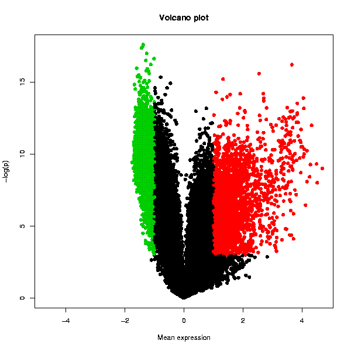

Tests whether the genes are differentially expressed using one-sample t-test, and plots the result in the form of a Volcano plot. A table with the original data, scaled fold change values and adjusted p-values is also returned.
Please note that Chipster contains also an interactive Volcano plot visualization, which allows you to select genes for further analysis. The interactive Volcano plot appears in the pull-down menu of the visualization panel when a dataset containing a fold change column and p-value column has been selected (these columns are produced for example by the empirical Bayes method of the two group test tool and the linear modelling tool).
This tool is best suited for 2-color array data where the comparison to a common reference is done on the array, as the distribution of expression values for each array is naturally symmetrically centered around 0 in the log scale. In order to be applicable also for other data, such as that from 1-color arrays, the tool autoamtically runs a per array scaling that forces the mean of each array to 0 and the standard deviation to 1. The 1-sample t-test then identifies the genes that differ from the value of 0 in a statistically significant manner across a number of arrays (at least 2 are needed), taking the standard deviation of the values into account.
The Volcano plot displays the statistical significance as a function of the magnitude of differential expression. In order to get an increasingly high value on the y-axis as p-values become more significant (i.e. lower), Chipster performs a base 10 log transformation with a change of sign. Hence a p-value of 1 (not significant at all) would yield a value of 0 on the y-axis as y = -(log10(1)). The usual cut-off levels of significance p=0.05 and p=0.01 are 1.3 and 2, respectively. The x-axis values are simply the scaled values averaged across the arrays in the whole dataset. The statistically significantly over-expressed genes are plotted with red color, and the under-expressed with green. Genes that are not changing are plotted with black. Another plot displays the variation of the expression value as the length of the bars representing the genes.
Two PNG images containing Volcano plots as shown below, and a table containing the original data and the numerical values used in the volcano plots: a column termed "FC" containing the averaged expression values (after per array scaling described above), and a column called "p.adjusted" containing the adjusted p-values (before the log10-transformation and sign change). Note that the column is called "p.adjusted" even if you have turned the multiple testing correction off by selecting "none" in the parameter settings. The data table can be visualized also with the interactive "Volcano plot" visualization method in the "Visualization" panel. This allows you to select data points and create data subsets.
